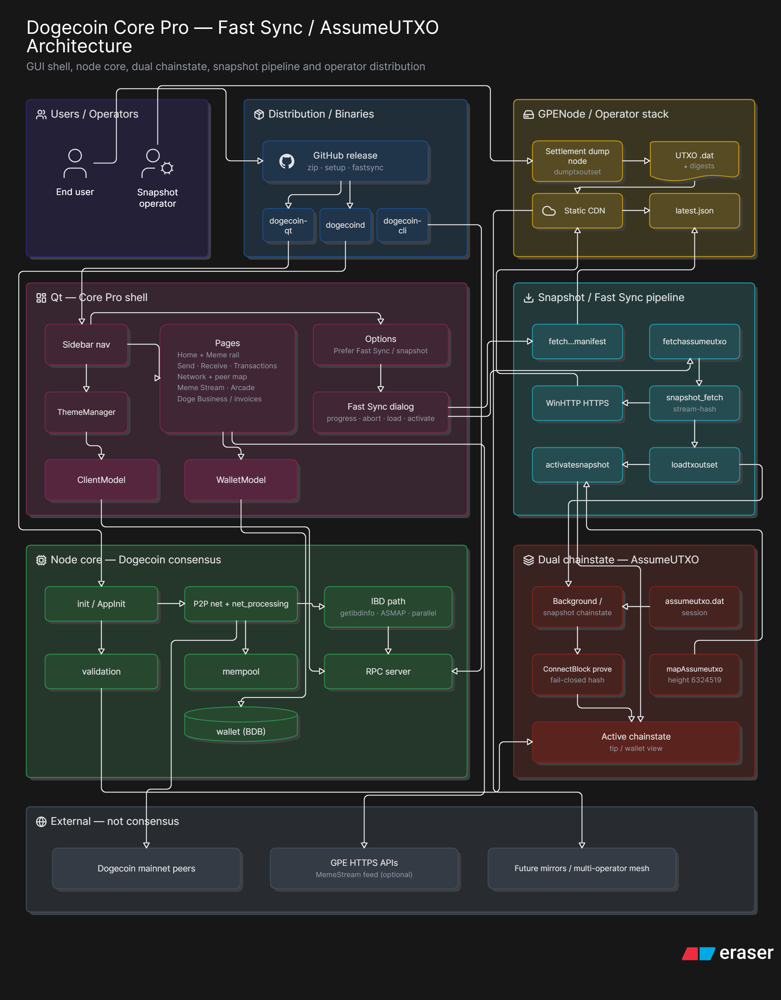
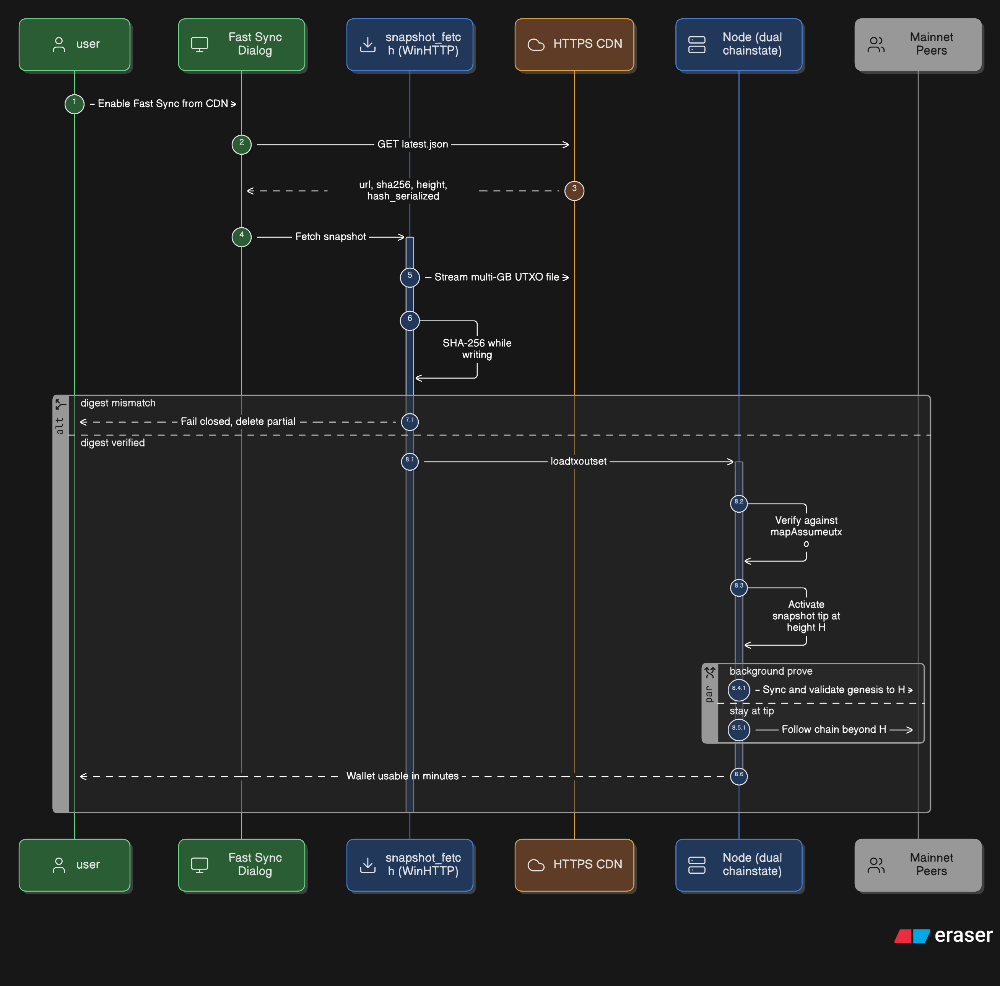
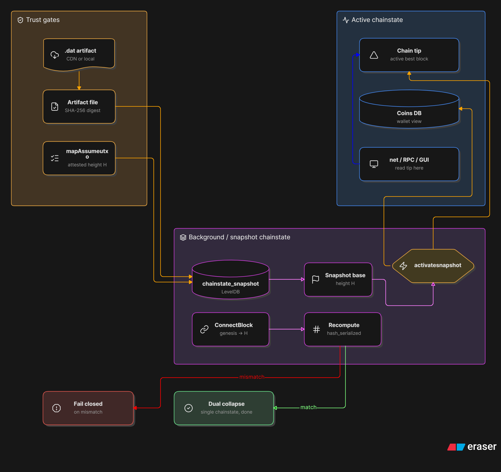
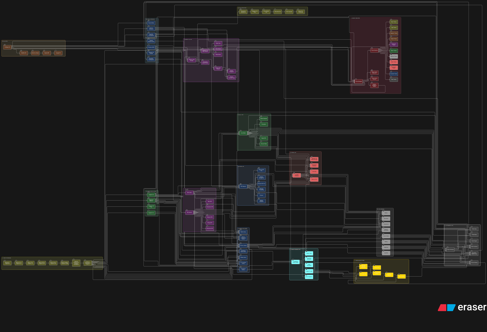

Diagrams
Canonical Eraser Freeform renders for Fast Sync / AssumeUTXO architecture.
Prefer these over chat sketches when status is disputed. Source assets also
live under -FlowDiagramLatest/ in the repo root.
1. Master architecture (canonical)
Full product map: users, GitHub distribution, Core Pro Qt shell, node core, dual chainstate, Fast Sync pipeline, GPENode operator stack, and external non-consensus surfaces (peers, optional GPE APIs, future mesh).

Open PNG · Write-ups: Architecture · Fast Sync · Mesh
{kind=link}
2. Fast Sync sequence (user path)
Settings → Fast Sync from CDN: manifest → stream-hash → load →
mapAssumeutxo gate → activate → background prove over P2P while
tip stays usable.

Open PNG · Fast Sync explained
{kind=link}
3. Dual chainstate / AssumeUTXO (engineering)
Trust gates (file SHA-256 + mapAssumeutxo), snapshot LevelDB,
activatesnapshot into active tip, background
ConnectBlock → recompute hash_serialized → match
(dual collapse) or mismatch (fail closed).

{kind=link}
4. Compact master (overview Freeform)
Compact four-box view used for decks: Core Pro node · CDN dumb pipe · GPENode operator · multi-operator mesh M0–M4. Same trust story as diagram 1.
Source Freeform export: validate against diagram 1 above. Caption for talks: “Hard fork? No. Same consensus. Software distribution ≠ protocol change.”
Layer stack (text)
Authoritative ASCII stack also on Architecture.
Qt (Core Pro shell, Arcade, Business, Meme Stream, Fast Sync dialog)
Wallet (BDB today)
RPC / ZMQ
P2P + net_processing (IBD rescue, ASMAP, historical fetch)
Validation + dual chainstate (AssumeUTXO active/background)
Consensus (AuxPoW, DigiShield, subsidy) — UNTOUCHED in bootstrap work
Storage: LevelDB chainstate + chainstate_snapshot + blk*.datIBD observe → rescue
Full write-up: IBD & P2P.
Product phases (P1–P4)
Product phases (not engineering A–D):
P1 Trust anchors + stream-hash Fast Sync UI ← ~90% shipped
P2 Default prune-as-you-go for wallet nodes ← partial
P3 Optional cold blk object CDN
P4 RocksDB-class hot engine (ops, not space)
Plan: doc/tiered-storage-and-fast-sync.md ·
Storage stack ·
Roadmap Phase 8.
Prune-as-you-go (stock Core)
Mid-IBD prune is valid. Product P2 makes this the default for non-archival installs.
Post-migration flow (legacy art)
Historical rebrand / layering visual from earlier in the project. Still useful as a broad subsystem map, but it does not show dual chainstate or the Fast Sync CDN path — use diagrams 1–3 above for that.

{kind=link}
{kind=link}
Sources & how to refresh
| Asset | Repo path | Docs path |
|---|---|---|
| Master architecture | -FlowDiagramLatest/master-diagram-latest.png |
assets/diagrams/master-diagram-latest.png |
| Fast Sync sequence | -FlowDiagramLatest/fastsync-diagram.png |
assets/diagrams/fastsync-diagram.png |
| AssumeUTXO dual chainstate | -FlowDiagramLatest/assumeUXTO-diagram.png |
assets/diagrams/assumeutxo-diagram.png |
| Mermaid paste sources | -FlowDiagramLatest/updatedmermaid.txt |
|
| Legacy post-migration | assets/diagrams/dogecoin-post-migration-diagram.{png,svg} |
|
After re-exporting from Eraser: copy PNGs into both
-FlowDiagramLatest/ and html/docs/assets/diagrams/,
then update captions on this page if the story changes.
Diagram backlog
- Master architecture (Eraser Freeform, validated)
- Fast Sync sequence (user path)
- AssumeUTXO dual chainstate + trust gates
- IBD stall/rescue path (this page + IBD doc)
- Legacy post-migration art preserved
- Wallet open / encrypt / spend sequence
- Theme application order at startup
- Future SQLite migratewallet flow